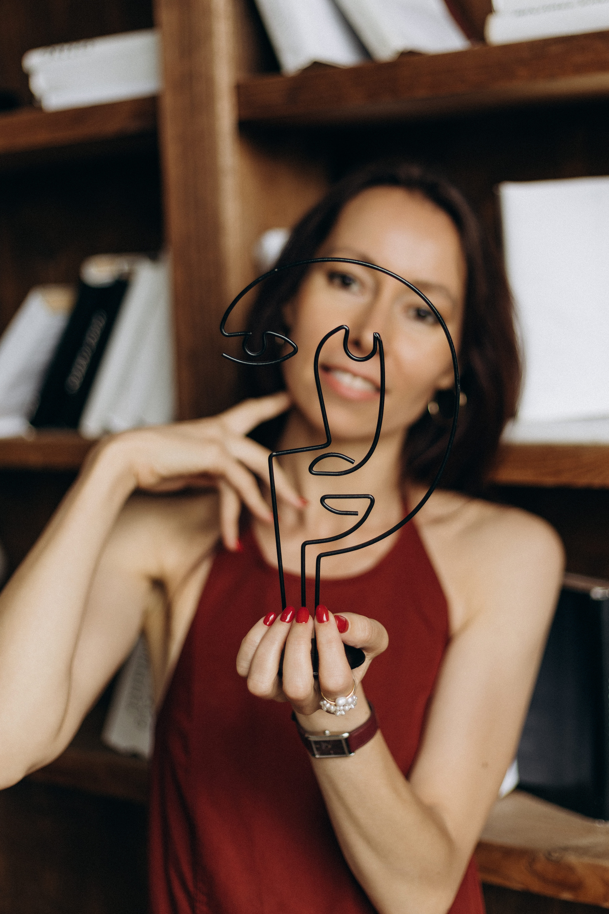
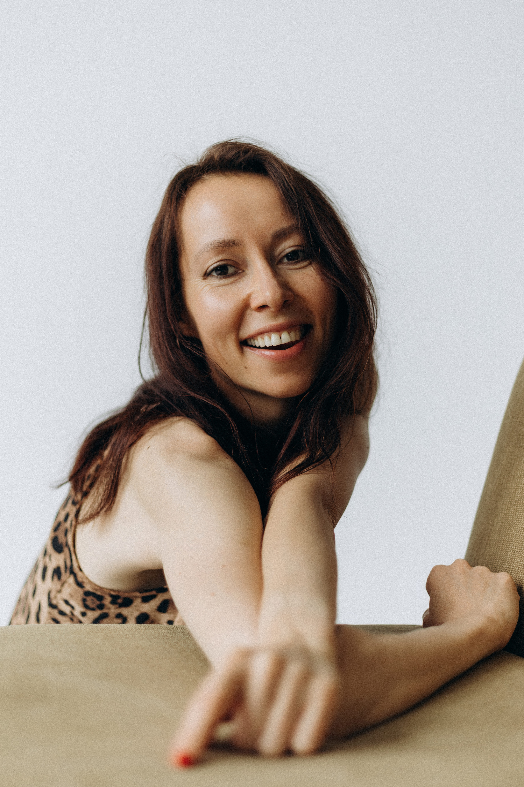
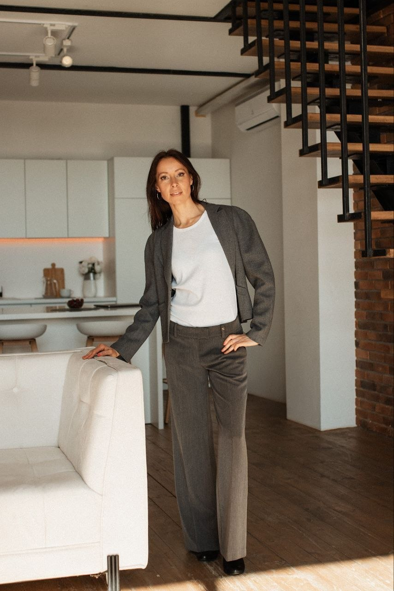

Selbsterkenntnis x
Sich selbst und andere besser verstehen und das eigene Potenzial entfalten.
Psychologin • Physiognomin
Die physiognomische Analyse ist eine Methode zur Erkenntnis der
individuellen Besonderheiten eines Menschen auf der Grundlage der
Analyse seiner Gesichtszüge und eine der Methoden der VISUELLEN
PSYCHODIAGNOSTIK.
Anders ausgedrückt ist sie eine Methode zur Erforschung der
inneren psychischen Welt eines Menschen durch die individuellen
Merkmale seines Gesichts.
Sie hilft dabei, Stärken und Schwachstellen, das persönliche
Potenzial, den Denkstil, emotionale Reaktionen, die Art der
Kommunikation, die Motivation, verborgene innere Konflikte usw.
besser zu verstehen.

PRAKTISCHE ANWENDUNG
Sich selbst und andere besser verstehen und das eigene Potenzial entfalten.
Aufbau einer effektiven Kommunikation sowie ein Instrument, um Menschen schnell zu verstehen und fundierte Führungs- und Personalentscheidungen zu treffen.
Steigerung der persönlichen Effektivität durch das Erkennen des eigenen Potenzials.
SO FUNKTIONIERT DIE METHODE

Ich verfüge über eine fundierte universitäre Ausbildung in Psychologie (Master of Science in Psychologie), ergänzt durch ein Promotionsstudium.
Meine Herangehensweise an das Gesichtslesen verbindet moderne Erkenntnisse der Neurophysiologie mit dem jahrtausendealten Wissen des Ayurveda über die Konstitutionstypen.
Die physiognomische Analyse ist eine Methode, die individuellen Eigenschaften eines Menschen anhand der Analyse seiner Gesichtsmerkmale zu erkennen.
Seit 2014 beschäftige ich mich intensiv mit der praktischen Physiognomik, biete individuelle Beratungen an und vermittle die Kunst des Gesichtslesens.
Möchtest du die Methode des Gesichterlesens kennenlernen und erleben, wie sie in der Praxis funktioniert? Dann ist dieses Angebot der ideale Einstieg.
In einem 15-minütigen Online-Gespräch erhältst du:
Der Preis für das Orientierungsgespräch beträgt nur 19 €.
Für den Einstieg genügt ein aktuelles Foto oder Selfie:
Hallo, ich bin Oksana Jankowska – praktizierende Physiognomistin und Psychologin.
Ich verfüge über eine fundierte Ausbildung in Psychologie (Master in Psychologie) und beschäftige mich seit über zehn Jahren mit praktischer Physiognomik. Ich unterstütze Menschen dabei, sich selbst, ihre Stärken, ihre Denkweise, ihre Art der Kommunikation und ihre Verhaltensmuster besser zu verstehen.
Ich biete individuelle Beratungen an, berate Unternehmen bei der Personalauswahl, lehre Physiognomik und verbinde in meiner Arbeit Psychologie, Neurophysiologie sowie das ayurvedische Wissen über die Konstitutionstypen des Menschen.

Ich verfüge über eine fundierte universitäre Ausbildung in Psychologie (Master in Psychologie), ergänzt durch ein Promotionsstudium.
Seit 2014 beschäftige ich mich nach meiner Ausbildung am United Physiognomist Center mit praktischer Physiognomik. Dort habe ich diesen Bereich der visuellen Psychodiagnostik erlernt.
Ich führe individuelle Beratungen im Gesichtslesen durch und berate Unternehmen bei der Personalauswahl und Personalbeurteilung.
Ich habe einen eigenständigen Kurs über die psychologischen Grundlagen der Physiognomik entwickelt und ihn als eigenständiges Lehrfach an einer nationalen Universität in Kyjiw (Ukraine) unterrichtet.
Darüber hinaus führe ich Trainings zur Anwendung physiognomischer Erkenntnisse in der Kommunikation, im Dienstleistungsbereich und im Vertrieb durch.
Derzeit absolviere ich eine Weiterbildung zur Psychologischen Ayurveda-Coachin (Institut für Psychologie und Ayurveda, Deutschland) und vertiefe mein Wissen im Bereich der Diagnostik des funktionellen Körperzustands anhand von Gesichtsmerkmalen.
Meine Herangehensweise an das Gesichtslesen verbindet moderne Erkenntnisse der Neurophysiologie mit dem jahrtausendealten Wissen des Ayurveda über die Konstitutionstypen.
Das Besondere an einer physiognomischen Beratung ist, dass ein Mensch bereits in nur einer Sitzung ein Verständnis für seine eigenen Stärken, seine Denkweise, seine Verhaltensmuster und seine Entwicklungspotenziale gewinnt – Erkenntnisse, für deren Bewusstwerdung sonst oft Jahre der Beobachtung und Selbstreflexion erforderlich sind.
Beratungen sind sowohl persönlich (face-to-face) als auch online für Klientinnen und Klienten auf Ukrainisch, Englisch und Deutsch verfügbar.
Wenn Sie sich für Physiognomik interessieren, lade ich Sie herzlich zu einer Beratung oder einem meiner Workshops ein, um diese außergewöhnliche Methode des Verständnisses der menschlichen Natur näher kennenzulernen.
Ich hatte immer das Gefühl, dass die Natur irgendwo einen Spickzettel für die menschliche Psyche versteckt hat. Also machte ich mich auf die Suche nach einer Möglichkeit, Menschen schneller zu verstehen, als sie sagen können: „Also eigentlich bin ich ein sehr kommunikativer Mensch …“
Die größte Herausforderung war allerdings nicht, Gesichter lesen zu lernen, sondern das Wort „Physiognomistin“ in mein Profil zu schreiben. Für eine akademisch ausgebildete Psychologin klingt das ungefähr so, als würde eine Professorin für Neurowissenschaften sagen: „Und jetzt sprechen wir über Karma.“
Aber angefangen hat alles ganz pragmatisch. Ich arbeitete als Psychologin in den Bereichen Wirtschaft, Human Resources, Personalauswahl und Organisationsdiagnostik. Dabei ließ mich ein Gedanke einfach nicht los: Gibt es wirklich keinen Weg, schneller zu verstehen, wer einem gegenübersitzt?
Keine Interviews, die eineinhalb Stunden dauern. Keine endlosen Tests. Sondern in wenigen Minuten. So bin ich schließlich bei der Physiognomik gelandet.
Zuerst kamen die Bücher. Dann eine fundierte Ausbildung. Danach wieder Bücher. Dann noch mehr Ausbildungen. Denn meine innere Skeptikerin sagte immer wieder: „Glaub nicht. Überprüf es.“
Für mich ist Physiognomik die Express-Version des Kennenlernens. Ein Blick ins Gesicht – und schon entsteht ein erster Eindruck von der Denkweise, dem Kommunikationsstil, dem Umgang mit Stress, den Stärken und den Verletzlichkeiten eines Menschen.
Bis heute überprüfe ich alles, vergleiche, analysiere und suche nach neurophysiologischen Erklärungen. Denn ich fühle mich dort am wohlsten, wo es Raum für Fragen, Zweifel und Forschung gibt.
Deshalb bin ich hier, um dir die evidenzbasierte Physiognomik näherzubringen. Ohne Wahrsagerei und mystische Magie – dafür mit kritischem Denken und einer großen Neugier darauf, wie viel unser eigenes Gesicht über uns erzählen kann.
ÜR PRIVATKUND:INNEN
Online oder persönlich vor Ort – Dauer ca. 1 Stunde.
Analyse deiner angeborenen und erworbenen Eigenschaften, die
deinen Charakter und deine Art, der Welt zu begegnen, prägen.
Die Beratung hilft dir, deine Stärken, Entwicklungspotenziale
und Verhaltensmuster zu erkennen, die deine Lebensqualität
maßgeblich beeinflussen.
Kompakte schriftliche Auswertung.
Analyse deiner fünf wichtigsten Stärken und deiner fünf
Entwicklungspotenziale – ergänzt durch einen persönlichen
Audiokommentar, der dir hilft, die gewonnenen Erkenntnisse
besser zu verstehen und nachhaltig zu verankern.
Online oder persönlich vor Ort – Dauer ca. 1,5 Stunden.
Die umfassende Beratung bietet eine mehrdimensionale Analyse
deiner Persönlichkeitsmerkmale und Charaktereigenschaften sowie
des funktionellen Zustands deines Körpers. Sie basiert auf den
Prinzipien des Ayurveda und der Analyse des Gesichts als
Projektionskarte der inneren Organe.
Kompatibilitätsanalyse anhand der Gesichtsmerkmale
Die Kompatibilitätsanalyse anhand der Gesichtsmerkmale hilft
dir, die Stärken eurer Beziehung besser zu verstehen, die
Ursachen von Missverständnissen zu erkennen und wirksame Wege
für eine harmonische Interaktion zu finden. Sie eignet sich für
Paare, Ehepartner und Geschäftspartner.
Online oder persönlich vor Ort – Dauer ca. 1 Stunde.
Analyse der psychologischen Eigenschaften, inneren Zustände und
Überzeugungen, die sich in deinen Gesichtsmerkmalen
widerspiegeln. Deren Bewusstwerdung und gezielte Veränderung
können zu einer harmonischeren Ausstrahlung beitragen.

FÜR UNTERNEHMEN
Die physiognomische Analyse von Bewerber:innen, Mitarbeiter:innen oder Geschäftspartner:innen kann als zusätzliches Analyseinstrument dabei unterstützen, Personal- und Geschäftsentscheidungen bewusster, fundierter und zielgerichteter zu treffen.
VOR DER GESICHTSANALYSE
Für eine aussagekräftige physiognomische Analyse sind aktuelle Fotos des Gesichts erforderlich. Die Fotos sollten bei Tageslicht und ohne Filter oder Retusche aufgenommen werden.

Для проведення якісного фізіогномічного аналізу необхідно надати актуальні фотографії свого обличчя. Допускаються селфі, за умови, що вони відповідають наведеним нижче вимогам.
Якщо у вас були зміни зовнішності або косметологічні втручання, обов'язково повідомте про це:
Також, будь ласка, вкажіть свій актуальний вік.
Persönlicher schriftlicher Bericht über deine fünf wichtigsten Stärken und deine fünf Entwicklungspotenziale – ergänzt durch einen exklusiven Audiokommentar mit Erklärungen und Empfehlungen, den du jederzeit wieder anhören kannst.
Für die Erstellung des schriftlichen Berichts ist weder ein Online-Termin noch ein persönliches Treffen erforderlich. Vor Beginn der Analyse sendest du mir aktuelle Fotos, die du nach einer kurzen Anleitung vorbereitest.
Online oder persönlich vor Ort – Dauer ca. 1 Stunde.
Schritt für Schritt zeige ich dir deine angeborenen Eigenschaften (natürliche Qualitäten) sowie jene Charakterzüge, die durch deine Lebenserfahrungen entstanden sind (erworbene Eigenschaften).
Diese faszinierende Reise zu dir selbst hilft dir, deine Stärken und Entwicklungspotenziale zu erkennen, deine emotionalen und Verhaltensmuster besser zu verstehen, innere Konflikte aufzudecken und dir bewusst zu machen, welche individuellen Erfolgs- und Misserfolgsmuster die Entfaltung deiner Potenziale beeinflussen.
Welche Antworten findest du?
Ich ergänze die Gesichtsanalyse durch individuell auf dich abgestimmte Empfehlungen. Sie helfen dir, deine Stärken bestmöglich zu entfalten, deine persönlichen Eigenschaften im Einklang mit dir selbst zu leben und dich auf deinem Weg der persönlichen Entwicklung zu unterstützen.
AKTION!
Bei Buchung dieser Beratung bis zum 1. September 2026 erhältst du 30 %
Rabatt.
Vor der Beratung sendest du mir aktuelle Fotos, die du nach einer kurzen Anleitung vorbereitest.
Online oder persönlich vor Ort – Dauer ca. 1,5 Stunden.
Diese Beratung bietet eine mehrdimensionale Analyse deiner prägenden Persönlichkeits- und Charaktereigenschaften sowie des funktionellen Zustands deines Körpers. Sie basiert auf ayurvedischem Wissen über den Zusammenhang zwischen Körper und Psyche sowie auf der Analyse des Gesichts als Projektionskarte der inneren Organe.
Diese Analyse stellt KEINE medizinische Diagnostik dar. Sie kann jedoch dabei helfen, frühzeitig Anzeichen eines Ungleichgewichts im Organismus wahrzunehmen und auf gesundheitliche Aspekte aufmerksam zu werden, die Unterstützung oder eine weiterführende medizinische Abklärung benötigen könnten.
Welche Antworten findest du?
PSYCHOLOGISCHES PROFIL
ENERGIE UND FUNKTIONELLER ZUSTAND DES KÖRPERS
Ich ergänze die Beratung durch individuelle Empfehlungen zur Harmonisierung deines Konstitutionstyps. Diese unterstützen dein Wohlbefinden und deine Ausstrahlung. Du erhältst einfache tägliche Rituale zur Regeneration deiner Energie, ayurvedische Empfehlungen für den Alltag sowie praxisnahes Wissen darüber, wie du deinen Körper und deine Psyche entsprechend deiner individuellen Konstitution nachhaltig unterstützen kannst – statt allgemeiner, pauschaler Ratschläge.
Vor der Beratung sendest du mir aktuelle Fotos, die du nach einer kurzen Anleitung vorbereitest.
Online oder persönlich vor Ort – Dauer ca. 1 Stunde.
Diese Beratung hilft euch, die Besonderheiten eurer Beziehung besser zu verstehen, die Ursachen von Missverständnissen zu erkennen und die Stärken eurer Verbindung zu entdecken. Ihr erfahrt, wie ihr harmonischer kommunizieren und wirkungsvoller miteinander umgehen könnt.
Geeignet für Paare, Ehepartner, Menschen in der Kennenlernphase sowie für Geschäftspartner.
Welche Antworten findest du?
Vor der Beratung sendet ihr mir aktuelle Fotos, die ihr nach einer kurzen Anleitung vorbereitet.
Online oder persönlich vor Ort – Dauer ca. 1 Stunde.
Diese Beratung verbindet die Analyse der Gesichtsmerkmale mit Techniken der Quantenphysiognomik. Dabei arbeite ich nicht direkt mit dem Gesicht, sondern mit der inneren Realität des Menschen, die sich darin widerspiegelt.
Im Rahmen der Gesichtsanalyse werden psychologische Eigenschaften, innere Zustände und Überzeugungen sichtbar, die die äußere Erscheinung beeinflussen. Deren Bewusstwerdung und gezielte Veränderung können zu positiven Veränderungen des äußeren Erscheinungsbildes beitragen.
Diese Beratung ist für dich geeignet, wenn du:
Neben dem Verständnis der Persönlichkeits- und Charaktereigenschaften, die sich in deinem Gesicht widerspiegeln, erhältst du außerdem:
Vor der Beratung sendest du mir aktuelle Fotos, die du nach einer kurzen Anleitung vorbereitest.
KURSE & TRAININGS
Die Kurse werden online und vor Ort angeboten – als Einzeltraining, in Gruppen, als Workshop oder im Rahmen von Firmentrainings.
Wie Sie Persönlichkeit und Charakter anhand von Gesichtsmerkmalen erkennen – von den Grundprinzipien bis hin zur Erstellung eines umfassenden Persönlichkeitsprofils.
Ein ayurvedischer Ansatz, um individuelle Eigenschaften anhand von Gesichtszügen und Körperbau zu erkennen.
Der Kurs ist online und vor Ort verfügbar. Möglich sind Einzeltrainings sowie Gruppen-Workshops und Firmentrainings.
Physiognomik bietet einen praktischen Ansatz, um Persönlichkeit und Charakter anhand von Gesichtsmerkmalen schneller zu erfassen. Im Kurs lernen Sie, das zu erkennen, was oft über Worte hinausgeht: Wer steht Ihnen gegenüber? Wie denkt und reagiert diese Person? Wie kommuniziert sie, wie trifft sie Entscheidungen und was können Sie im Umgang mit ihr erwarten?
Der Kurs besteht aus drei aufeinander aufbauenden Stufen, die jeweils fünf thematische Module umfassen. Die Inhalte bauen schrittweise aufeinander auf – von den Grundlagen der Analyse von Gesichtsmerkmalen bis zur ganzheitlichen Erstellung eines Persönlichkeitsprofils.
Der Kurs verbindet Theorie und Praxis:
Dieses Lernformat ermöglicht dir, in deinem eigenen Tempo zu lernen und gleichzeitig praktische Erfahrungen mit meiner persönlichen Begleitung zu sammeln.
Du lernst, angeborene Gesichtsmerkmale zu erkennen und ihren Zusammenhang mit den natürlichen Eigenschaften einer Person zu verstehen.
Du lernst:
Du lernst, erworbene Gesichtsmerkmale zu lesen, die durch aktuelle Lebenssituationen, Erfahrungen, Emotionen und prägende Ereignisse entstehen.
Du lernst:
Du arbeitest mit besonderen Merkmalen und lernst, das Gesicht anhand des Zusammenspiels verschiedener Marker ganzheitlich zu analysieren.
Du lernst:
Der Kurs ist online und vor Ort verfügbar. Möglich sind Einzeltrainings sowie Gruppen-Workshops und Firmentrainings.
In diesem praxisorientierten Kurs lernst du, individuelle Eigenschaften anhand von Gesichtszügen und Körperbau nach den Prinzipien des Ayurveda zu erkennen. Ayurveda ist ein jahrtausendealtes Wissenssystem, das sich mit der individuellen Konstitution, den psychischen und körperlichen Eigenschaften sowie den Prinzipien eines gesunden und harmonischen Lebens beschäftigt.
Der Kurs besteht aus 5 kompakten Lernmodulen.
Das Lernformat verbindet Theorie und Praxis:
So kannst du in deinem eigenen Tempo lernen und gleichzeitig praktische Erfahrungen sammeln – mit meiner persönlichen Begleitung und Unterstützung.
Der Kurs vermittelt dir einen Zugang zu den prägenden Eigenschaften einer Persönlichkeit – ihren natürlichen Stärken und möglichen Schwachstellen – noch bevor sie sich im Umgang mit anderen deutlich zeigen. Du lernst, besser einzuschätzen, wie eine Person denkt, Informationen wahrnimmt, emotional reagiert und kommuniziert, abhängig von ihrem dominanten Konstitutionstyp.
Das erworbene Wissen kannst du außerdem in der Beratung, Psychologie, im Coaching und im Wellnessbereich einsetzen. Es kann dir auch dabei helfen, als Wellness-Berater:in zu arbeiten – Anzeichen eines möglichen Ungleichgewichts frühzeitig zu erkennen und grundlegende Empfehlungen zu geben, die dabei unterstützen können, innere Balance, Energie und Lebenskräfte zu erhalten.
MEHR ERFAHREN
Du erhältst ein klareres Bild von den Stärken und möglichen Schwachstellen, dem persönlichen Potenzial, Denkstil, emotionalen Reaktionen, Kommunikationsverhalten und der Motivation einer Person. Außerdem können verborgene innere Konflikte sichtbar werden.
Ja. Die Beratung ist online oder persönlich vor Ort möglich.
Nein. Eine physiognomische Analyse ist keine medizinische Diagnose und ersetzt keinen Arztbesuch. Sie kann jedoch helfen, mögliche Anzeichen eines Ungleichgewichts frühzeitig wahrzunehmen und auf Bereiche aufmerksam zu machen, die möglicherweise weitere Aufmerksamkeit oder eine ärztliche Abklärung benötigen.
Ja. Eine physiognomische Analyse von Bewerber:innen, Mitarbeiter:innen oder Geschäftspartner:innen kann eine zusätzliche Unterstützung bei Personal- und Geschäftsentscheidungen bieten.
Für die physiognomische Analyse brauchst du geeignete Fotos. Wie du die Fotos richtig aufnimmst, findest du in der Anleitung.
Bei der Umfassenden Gesichtsanalyse werden neben Persönlichkeit und Charakter auch der funktionelle Zustand des Körpers betrachtet.
Ja. Der Praxiskurs in Physiognomik ist online und vor Ort verfügbar. Du kannst ihn individuell, in Gruppen-Workshops oder als Firmentraining absolvieren.
KUNDENSTIMMEN

Betreff: Danke für das wertvolle Gespräch
Hallo Oksana,
einige Tage sind vergangen, und ich möchte dir nochmal von
Herzen für unser Gespräch danken. Besonders beeindruckt hat
mich, wie präzise du mein Gesicht lesen kannst und
Rückschlüsse auf den Menschen ziehen kann.
Wie du gemerkt hast, hat mich ein Thema besonders tief
berührt: das Loslassen. Alles, was du sonst über mich gesagt
hast, hat absolut mit meinem Human Design Chart und meinem
eigenen Erleben übereingestimmt. Es fasziniert mich immer
wieder, wenn sich solche Erkenntnisse auf verschiedenen Ebenen
bestätigen.
Es ist so spannend was die Landkarte unseres Gesichtes erzählen kann. Und besonders schön, wenn die Informationen liebevoll von Oksana vermittelt werden. Manche Themen waren mir sehr bekannt und interessant, dass sie im Gesicht lesbar sind. Auch Seelenaufgaben und wie sie ihren Ausdruck finden dürfen oder eben noch nicht so gelebt werden.
Liebe Oxana, Du, dein Wissen, dein Können, deine Arbeit haben mich so beschrieben wie mich nicht einmal meine Engsten kennen. Ich möchte dir sehr dafür danken. Denn durch dich und dein Tun weiß ich nun, dass mein Denken nicht falsch oder verrückt ist, sondern dass das einfach ich bin. Du hast mich wirklich zu Tränen gerührt und ich habe mich noch nie so verstanden gefühlt, obwohl ich kein Wort gesagt habe.
For several years now, I’ve been turning to this specialist, who combines neuropsychology and physiognomy, every time I start a new role. Her guidance on how to build a relationship with my new boss has been remarkably accurate: I regularly return to her recommendations during my work, and they consistently prove true and give me a clear trajectory for successful communication. I’m deeply grateful for her unique expertise and highly recommend her to anyone who wants to better understand their leadership and navigate complex professional dynamics.
Вітаю, Оксано.
Як цікаво, що періодично в якісь важливі і переломні моменти
згадую вас і читаю переписку і включаю собі ваш голос 💫
Вчора довго шукала переписку з вами і так зраділа, коли
знайшла.
І ваш голос і повідомлення знову перечитую для підтримки
💫❤️👏
Щоб вмовити себе, що мені важливо оновити свої внутрішні сили.
Нещодавно спілкувався з @oksana_veda, яка є
психологом-фізіогномістом. По рисам мого обличчя та виразам,
Оксана охарактеризувала всі мої якості та надала повний аналіз
особистості.
Дійсно цікаво, як по обличчю можна описати незнайому людину?!
Але це реально.
🖊️ Ось деякі нотатки:
— послідовний, ретельно готуюсь перед тим, як діяти
Відгук після онлайн-консультації, написаний в коментарях до
публікації:
Да. Все именно так. Вторая моя консультация и думаю не
последняя. 😍 Читая этот пост, теперь понимаю, откуда ноги
растут!! 😍 Это действительно очень глубокий и многосторонний
обзор.
Вже кілька років я звертаюся до цієї спеціалістки, яка поєднує нейропсихологію та фізіогноміку, щоразу, коли починаю працювати на новій посаді.
Її рекомендації щодо того, як вибудовувати взаємини з новим керівником, виявляються напрочуд точними: я регулярно повертаюся до них у процесі роботи, і вони щоразу підтверджуються, допомагаючи мені чітко бачити напрямок для успішної комунікації.
Я щиро вдячна за її унікальну експертизу й із задоволенням рекомендую її кожному, хто прагне краще зрозуміти свого керівника та впевнено орієнтуватися у складній професійній взаємодії.
Тема: Дякую за цінну розмову
Привіт, Оксано!
Минуло кілька днів, і я хочу ще раз від щирого серця подякувати тобі за нашу розмову. Особливо мене вразило те, наскільки точно ти можеш читати обличчя й робити висновки про людину.
Як ти, мабуть, помітила, одна тема особливо глибоко мене зачепила — уміння відпускати. Усе інше, що ти сказала про мене, повністю збіглося з моєю картою Human Design і моїм власним життєвим досвідом. Мене щоразу захоплює, коли такі усвідомлення підтверджуються на різних рівнях.
Але твої слова про чіпляння за минуле і вміння відпускати не лише зворушили мене, а й, у хорошому сенсі, збентежили. Я багато про це думав і раптом усвідомив, що мій дідусь був затятим збирачем. Він не міг нічого викинути, збирав усе, що знаходив, — навіть маленькі шматочки ланцюжків на вулиці. І тепер я бачу, наскільки глибоко ця модель закорінена і в мені.
Завдяки твоїм підказкам я зрозумів, що настав час розлучитися з багатьма речами, які я роками тягну за собою, — речами, якими не користуюся і які мені насправді не потрібні. Я відчуваю, що саме зараз відпускання є дуже важливим кроком для мене.
Своїм спостереженням і своєю оцінкою ти запустила в мені дуже цінний внутрішній процес. За це я хочу від щирого серця подякувати тобі!
З найкращими побажаннями,
Андре
Так захопливо, що може розповісти карта нашого обличчя. І особливо прекрасно, коли Оксана передає цю інформацію з такою любов'ю.
Деякі теми були мені добре знайомі, і було дуже цікаво дізнатися, що вони читаються на обличчі.
Також — завдання душі та те, як вони можуть знаходити свій прояв або ж поки що ще не проживаються.
Щиро рекомендую,
Констанце
Відгук після онлайн-консультації, написаний у коментарях до публікації:
Так. Саме так. Це моя друга консультація, і, думаю, не остання. 😍 Читаючи цей пост, тепер розумію, звідки ноги ростуть!! 😍 Це справді дуже глибокий і багатосторонній огляд. У нас на обличчі все як на долоні. Але не всі вміють так його читати. Ти справді профі у цьому! Я впевнена, що жоден психотест не може бути настільки правдивим. І будь-який медик повинен уміти побачити по обличчю зміни в організмі або схильність до них. Це рідкість.
Після консультації розумієш у собі деякі аспекти, про деякі вже здогадувалася. Деякі я собі дозволила — бути такою і робити з них ресурс, а не боротися з ними чи змінювати їх. Навіть опис у плані естетики відходить на другий план. 😂
На наступній консультації, мабуть, запитаю, куди намалювати родимку, щоб скоригувати поведінку або отримати бажану мрію. 🖤🙌🏻🙌🏻🙌🏻🙌🏻🙌🏻🙌🏻
Відгук після прочитання письмових матеріалів після онлайн-консультації (особисті моменти клієнтки я не публікую):
Прочитала. Усе точно «до міліметра». Особливо цінні поради. Розділ
про здоров'я теж — аналіз кращий за лікаря.
...
Я дуже-дуже тобі вдячна. Це справді цінно.
Дорога Оксано!
Ти, твої знання, твої вміння, твоя праця описали мене так, як мене не знають навіть найближчі мені люди.
Я дуже хочу подякувати тобі за це. Завдяки тобі й тому, що ти робиш, тепер я знаю, що моє мислення не є неправильним чи божевільним — це просто я.
Ти справді зворушила мене до сліз. Я ще ніколи не відчувала, що мене настільки добре зрозуміли, хоча я не сказала жодного слова.
Я від щирого серця бажаю тобі, щоб ти могла нести свій дар у світ і завдяки йому збагачувати життя дуже багатьох людей.
Ще раз дякую тобі від щирого серця ❤️❤️ і бажаю тобі всього-всього найкращого.
KONTAKT

Kontaktiere mich für eine individuelle Beratung
Beratung buchenSchreib mir direkt oder hinterlasse deine Kontaktdaten. Ich sende dir die aktuelle Preisliste und helfe dir gerne dabei, das passende Angebot für dich auszuwählen.
Відгук після онлайн-консультації, написаний в коментарях до публікації:
Да. Все именно так. Вторая моя консультация и думаю не последняя. 😍 Читая этот пост, теперь понимаю, откуда ноги растут!! 😍 Это действительно очень глубокий и многосторонний обзор. У нас на лице всё налицо. Но не все умеют так его читать. Ты действительно профи в этом! Я уверена, что ни один психотест не может быть настолько правдив. И любой медик должен уметь увидеть по лицу изменения в организме или предрасположенность. Это редкость.
После консультации понимаешь в себе некоторые аспекты, о некоторых уже догадывалась. Некоторые себе разрешила — быть такой и делать из них ресурс, а не бороться с ними или менять. Даже описание в плане эстетики уходит на второй план. 😂
В следующей консультации, наверное, спрошу, куда родинку нарисовать, чтобы откорректировать поведение или получить желаемую мечту. 🖤🙌🏻🙌🏻🙌🏻🙌🏻🙌🏻🙌🏻
Відгук після прочитання письмових матеріалів після онлайн-консультації (особисті моменти Клієнтки я не публікую):
Прочла. Все точно «до миллиметра». Особенно ценные советы. Отдел по
здоровью тоже ❤️ анализ лучше доктора.
...
Я очень очень тебе благодарна. Это действительно ценно.
Liebe Oxana, Du, dein Wissen, dein Können, deine Arbeit haben mich so beschrieben wie mich nicht einmal meine Engsten kennen.
Ich möchte dir sehr dafür danken. Denn durch dich und dein Tun weiß ich nun, dass mein Denken nicht falsch oder verrückt ist, sondern dass das einfach ich bin.
Du hast mich wirklich zu Tränen gerührt und ich habe mich noch nie so verstanden gefühlt, obwohl ich kein Wort gesagt habe.
Ich wünsche dir wirklich, dass du deine Gabe in die Welt tragen darfst und dass du damit ganz viele Menschen bereicherst.
Danke dir nochmal von ❤️❤️ und alles alles Liebe für dich.
Вітаю, Оксано.
Як цікаво, що періодично в якісь важливі і переломні моменти згадую
вас і читаю переписку і включаю собі ваш голос 💫
Вчора довго шукала переписку з вами і так зраділа, коли знайшла.
І ваш голос і повідомлення знову перечитую для підтримки 💫❤️👏
Щоб вмовити себе, що мені важливо оновити свої внутрішні сили.
Обіймаю. Дякую вам за підтримку через роки.
Цікаво, як деякі люди і слова мають тонку сильну підтримку і я згадую
про це знову в переломні ситуації. ❤️ Дякую вам!
For several years now, I’ve been turning to this specialist, who combines neuropsychology and physiognomy, every time I start a new role. Her guidance on how to build a relationship with my new boss has been remarkably accurate: I regularly return to her recommendations during my work, and they consistently prove true and give me a clear trajectory for successful communication. I’m deeply grateful for her unique expertise and highly recommend her to anyone who wants to better understand their leadership and navigate complex professional dynamics.
Betreff: Danke für das wertvolle Gespräch
Hallo Oksana,
einige Tage sind vergangen, und ich möchte dir nochmal von Herzen für unser Gespräch danken. Besonders beeindruckt hat mich, wie präzise du mein Gesicht lesen kannst und Rückschlüsse auf den Menschen ziehen kann.
Wie du gemerkt hast, hat mich ein Thema besonders tief berührt: das Loslassen. Alles, was du sonst über mich gesagt hast, hat absolut mit meinem Human Design Chart und meinem eigenen Erleben übereingestimmt. Es fasziniert mich immer wieder, wenn sich solche Erkenntnisse auf verschiedenen Ebenen bestätigen.
Doch deine Worte zum Thema Festhalten und loslassen haben mich nicht nur berührt, sondern auch irritiert – im positiven Sinne. Ich habe viel darüber nachgedacht und plötzlich erkannt, dass mein Großvater ein extremer Sammler war. Er konnte nichts wegwerfen, sammelte alles, was er fand – sogar kleine Kettenstücke auf der Straße. Und jetzt sehe ich, wie dieses Muster tief in mir steckt.
Dank deiner Impulse ist mir bewusst geworden, dass es an der Zeit ist, mich von vielem zu trennen, was ich seit Jahren mit mir herumschleppe – Dinge, die ich weder benutze noch wirklich brauche.
Ich spüre, dass das Loslassen gerade ein wichtiger Schritt für mich ist.
Du hast mit deiner Beobachtung und Einschätzung etwas sehr Wertvolles in mir angestoßen – dafür möchte ich dir von Herzen danken!
Liebe Grüße
André
Es ist so spannend was die Landkarte unseres Gesichtes erzählen kann. Und besonders schön, wenn die Informationen liebevoll von Oksana vermittelt werden.
Manche Themen waren mir sehr bekannt und interessant, dass sie im Gesicht lesbar sind. Auch Seelenaufgaben und wie sie ihren Ausdruck finden dürfen oder eben noch nicht so gelebt werden.
Herzliche Empfehlung,
Constanze
Нещодавно спілкувався з @oksana_veda, яка є психологом-фізіогномістом. По рисам мого обличчя та виразам, Оксана охарактеризувала всі мої якості та надала повний аналіз особистості.
Дійсно цікаво, як по обличчю можна описати незнайому людину?! Але це реально.
🖊️ Ось деякі нотатки:
Ці якості та характеристики, в поєднанні з внутрішньою енергією, дають можливість робити неймовірні речі.